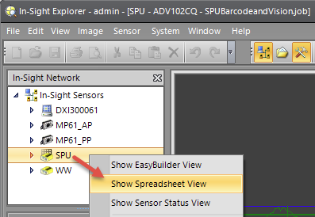
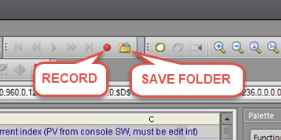
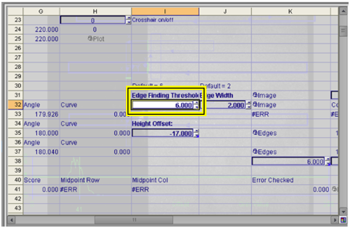
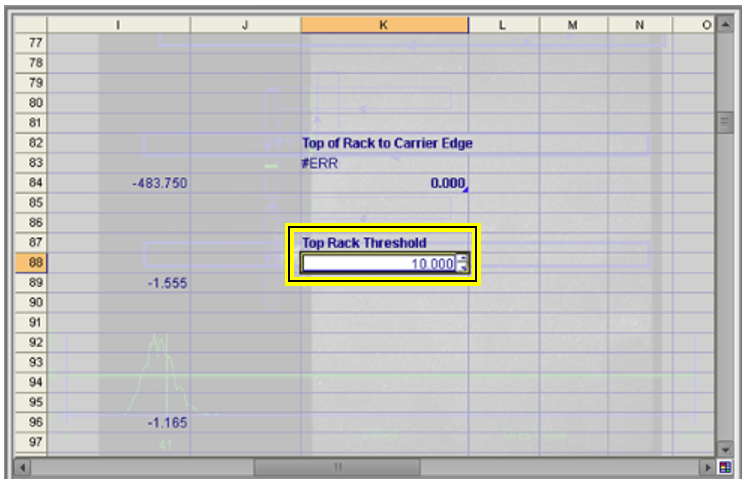
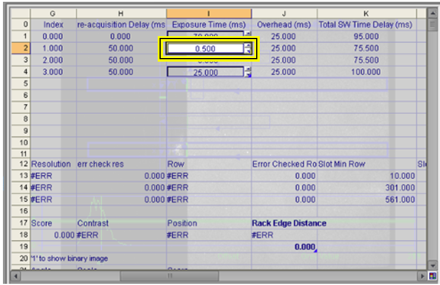
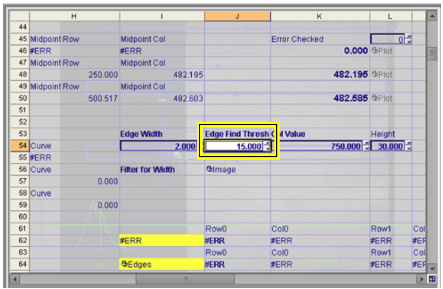

Troubleshooting Sample Container Detection
| Troubleshooting Sample Container Detection |
|---|
| Step 1: Show the Spreadsheet View for the SPU Camera |
| Step 2: Perform SPU Camera Diagnostics |
| Step 3: Troubleshoot Based on the Failure Modes Identified |
Step 1: Show the Spreadsheet View for the SPU Camera
- Open the Windows
Start menu, and navigate to
.
Note: "In-Sight Explorer" may be followed by the current version number (i.e. 5.3.0).
- From the
In-Sight Network pane, right-click (or long-press)
SPU and select
Show Spreadsheet View.

- Optional: Select the red button from the tool bar at the top to start recording. In-Sight will automatically stop recording when the program is closed.
Note: The default folder for the recording(s) to save is C:\ProgramData\Cognex\In-Sight\In-Sight Explorer 5.3.0\RecordPlayback\SPU but the user can define an alternative folder if desired by selecting the folder icon next to the record button.

Step 2: Perform SPU Camera Diagnostics
In the Console App, perform SPU camera diagnostics. See Performing Sample Presentation Unit (SPU) Camera Diagnostics for more information.
- A result of Pass indicates that the camera is properly calibrated and requires no further action.
- If a result displays as
Fail, troubleshoot based on the failure modes identified. Go to
Step 3: Troubleshoot Based on the Failure Modes Identified.
Note: The camera cannot always distinguish between 12x100mm and 13x100 mm sample tubes, or between 12x75mm and 13x75mm sample tubes, and may produce a failing result due to this limitation, however this is deemed acceptable as the pipetting performance is the same for both container types.Note: If a container fails, the results can be compared to the attached specifications (height, width, histogram, cup bright count) for each container type to better understand the failure method: SPUPresentationAssembly_1_20SW.txt
Step 3: Troubleshoot Based on the Failure Modes Identified
If after you perform SPU camera diagnostics a result displays as Fail, troubleshoot based on the failure modes identified.
- Troubleshooting When the Height Value Is Below the Minimum Threshold
- Troubleshooting When the Height Exceeds the Maximum Threshold
- Troubleshooting When the Histogram Value Is Below the Minimum Threshold
- Troubleshooting When the Histogram Value Exceeds the Maximum Threshold
- Troubleshooting When the Width Value Is Out of Range
Troubleshooting When the Height Value Is Below the Minimum Threshold
If the height is too low (below the specified minimum for the sample container), calibrate the SPU camera. See Calibrating the Sample Presentation Unit (SPU) Camera for more information.
Troubleshooting When the Height Exceeds the Maximum Threshold
- Inspect the failed rack and ensure containers are fully seated (pushed down). If containers were not fully seated, re-seat them and repeat the diagnostic.
- Inspect the background for the SPU camera for splashing or scratches. If found, clean any splashes/debris with DI water and lint-free cloth, or replace a scratched background as needed. Once there are no visible splashes/debris or scratches, calibrate the SPU camera. See
Calibrating the Sample Presentation Unit (SPU) Camera for more information.
Note: The Edge Finding Threshold in cell I32 within the In-Sight Explorer spreadsheet may need to be increased during cleaning to not falsely detect any marks.

- For cup racks specifically, if the rack is dirty or has visual defects, the camera can have issues with detecting the top of the rack. In the case the top of the rack is detected in the middle of the rack or not in the right location, the rack may need to be cleaned or replaced. For repeated issues, calibrate the SPU camera (see
Calibrating the Sample Presentation Unit (SPU) Camera for more information), and adjust the
Top Rack Threshold in cell
K88 lower than default value of 10.

- In the case tubes are still detected higher after re-calibration, check alignment of the SPU Presentation to SPU and adjust as needed. See Aligning the Sample Presentation Unit (SPU) for more information.
Troubleshooting When the Histogram Value Is Below the Minimum Threshold
- Inspect the failed rack for visual obstructions on the top of the container, such as markings, scratches, or cracks. Replace damaged container(s) and repeat the diagnostic as needed.
- Some plastic 12x75, 13x75, 12x100, or 13x100 tubes may misidentify as tubes with a 1ml insert due to the darkness at the top of the container that sets the histogram value lower than desired. If this happens, adjust the
Exposure Time (ms) in cell
I2 (Index 1) from default value of 0.750 ms to max 1.000 ms in 0.050 increments and calibrate the SPU camera again to save the values into the system database. See
Calibrating the Sample Presentation Unit (SPU) Camera for more information.
Note: It is recommended to check Beckman 2 ml cup and tube detection also when changing exposure time as the Edge Finding Threshold in cell I32 may need to be increased as well (i.e. 6 to 8).

Troubleshooting When the Histogram Value Exceeds the Maximum Threshold
If the histogram value is too high (above the specified maximum for the sample container), inspect the failed rack and background for the SPU camera for splashing/debris or damage. Clean/replace as needed and calibrate the SPU camera. See Calibrating the Sample Presentation Unit (SPU) Camera for more information.
Troubleshooting When the Width Value Is Out of Range
- Inspect the failed rack for visual obstructions on the top of the container, such as markings, scratches, or cracks. Replace damaged container(s) and repeat the diagnostic as needed.
- If the detected width is
0, reduce the
Edge Find Threshold in cell
J55 from 15 to 10 and calibrate the SPU camera. See
Calibrating the Sample Presentation Unit (SPU) Camera for more information.

- Inspect the background for the SPU camera for splashing or scratches. If found, clean any splashes/debris with DI water and lint-free cloth, or replace a scratched background as needed. Once there are no visible splashes/debris or scratches, calibrate the SPU camera. See Calibrating the Sample Presentation Unit (SPU) Camera for more information.